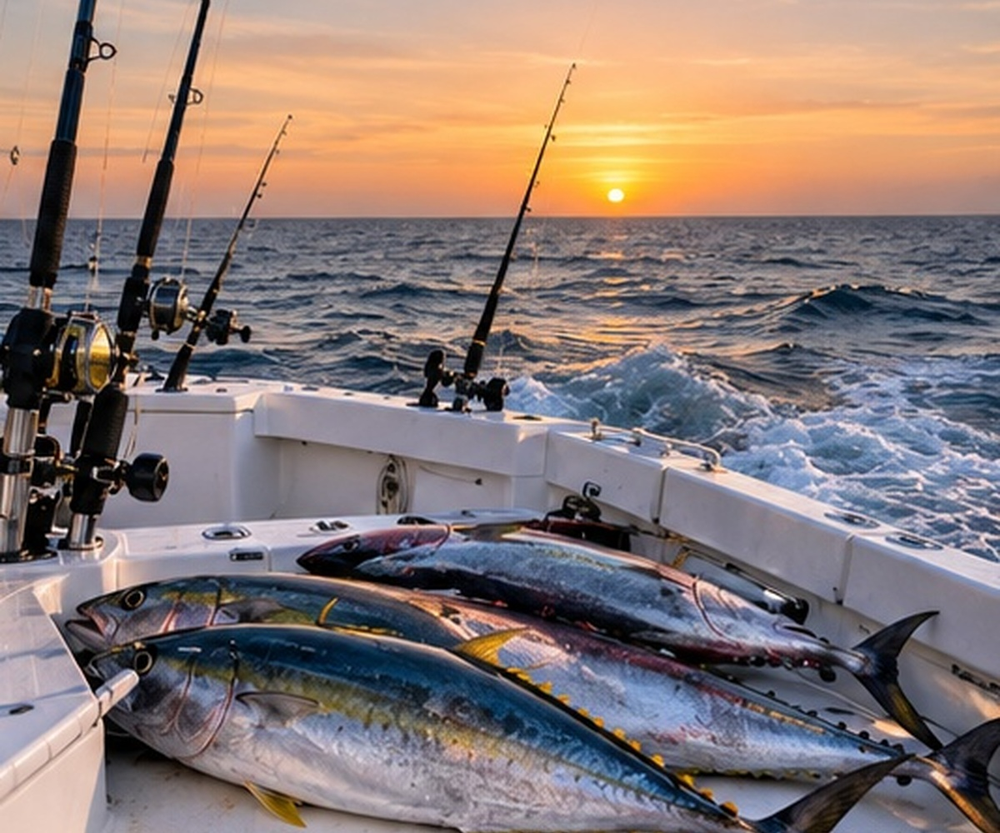
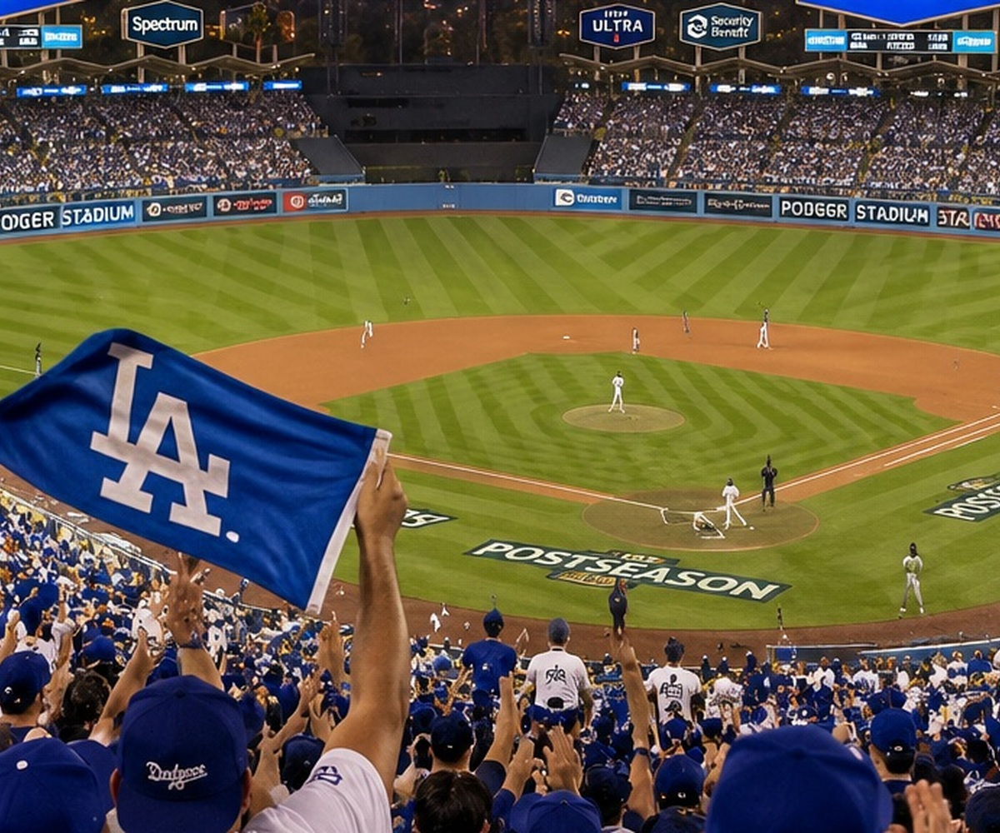

What Is Porter Service? Duties, Costs, and When It Makes Sense
What a porter does during operating hours, how coverage differs from nightly cleaning, and when the additional cost may be practical.
Read ArticleLocal events, practical business topics, and everyday life from Paradigm Janitorial Services. For offices, storefronts, estates, and other managed properties in Los Angeles and San Bernardino counties, explore our commercial cleaning or residential cleaning services.
What a porter does during operating hours, how coverage differs from nightly cleaning, and when the additional cost may be practical.
Read Article
On difficult decisions, mixed feelings, and finding a steadier path through life after a marriage changes.
Read Article
Freshwater and saltwater fishing options for Los Angeles County anglers.
Read Article
A look at the summer offshore fishing season and how to interpret catch reports.
Read ArticleIdeas for family friendly Halloween outings and ways to check event details.
Read ArticleUnderstand worker classification, payroll duties, tax forms, and the practical differences for your business.
Read Article
Consider the potential advantages and responsibilities of an employee retirement plan.
Read ArticleAn introduction to Social Security contributions, retirement benefits, and planning ahead.
Read Article
A prepared office needs more than pens and printer paper. These are the supplies and essentials you are glad to have when somebody actually needs them.
Read Article
Family vacations are easier to plan when the destination fits your children, your pace, and the kind of memories your family wants to make.
Read ArticleHoliday gatherings bring familiar favorites, festive drinks, shared dishes, and new traditions to tables across Los Angeles.
Read Article
Football season brings a familiar Sunday rhythm back to Los Angeles, with fans gathering at homes, restaurants, bars, and community spaces to watch the games together.
Read Article
October baseball has a way of changing the mood of Los Angeles. From the stadium to neighborhood watch parties, playoff season gives the city something to talk about together.
Read Article